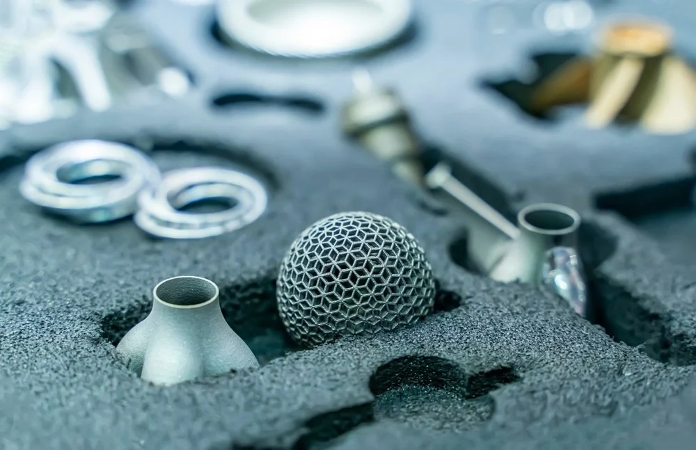
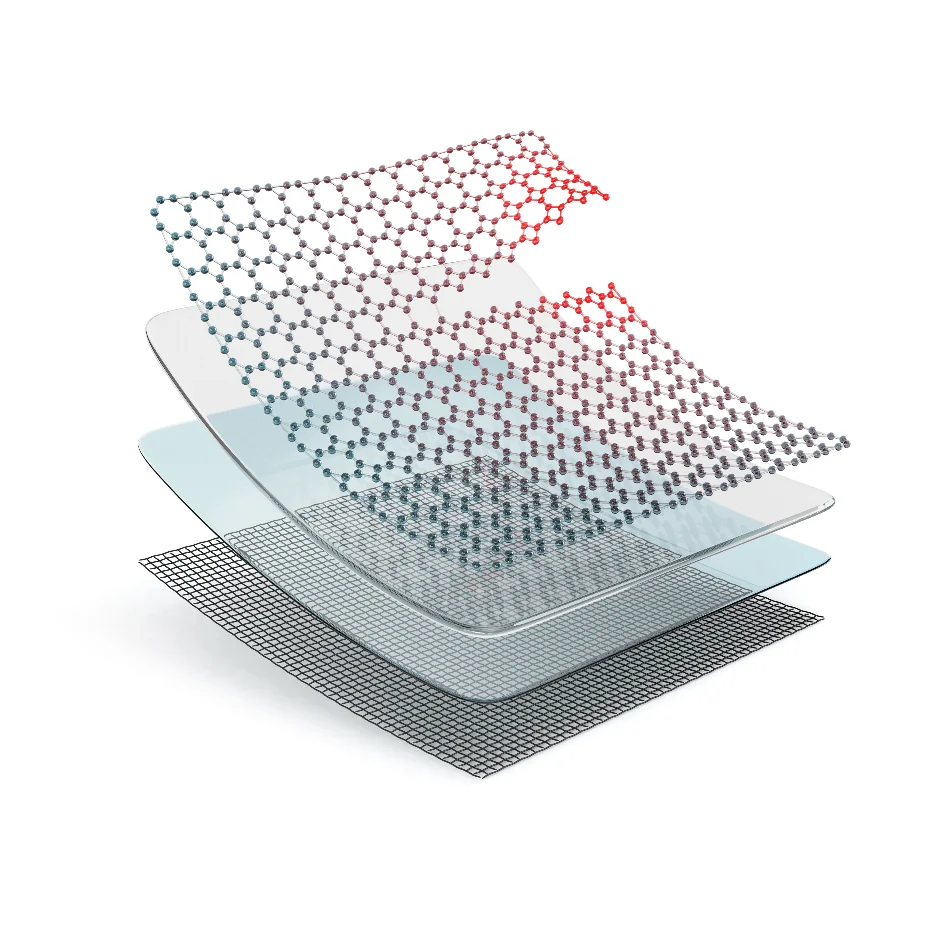
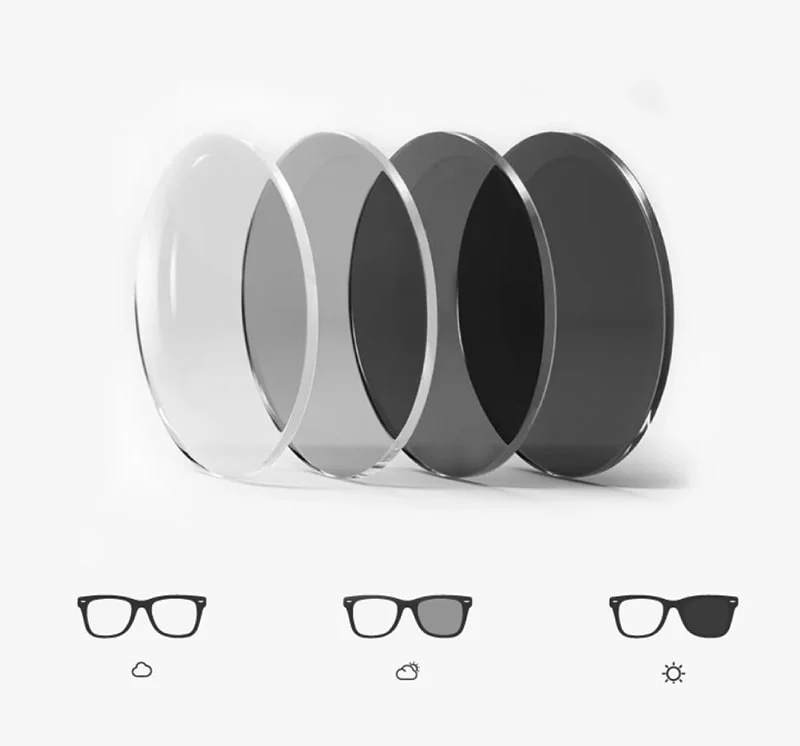
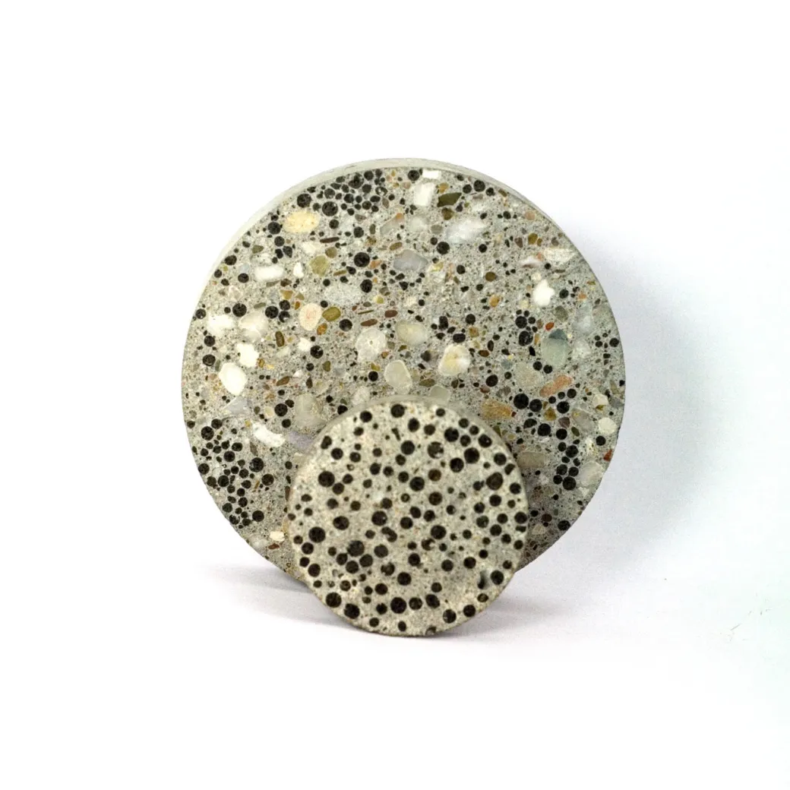

They're metals and they can get twisted or bent out of shape when they're cold. But the second you heat them up they pop right back into their original shape.
They have great benefits, they could be like unbreakable glass, you could bend the glass completely and they'd just pop back to normal instead of snapping like normal glass would.

They're plastic materials that could automatically repair their own cracks or scratches when they get damaged, usually by releasing a healing agent that's stored in tiny capsules.
They have incredible benefits, and could be used for phone protectors or even screens, they coudl heal the minor scratches.

Materials that can temporarily change color or transparency in response to light intensity, basically UV light from the sun, and when you go back indoors they return to being clear.
They're mostly used for darkening glasses, when you're indoors it uses it as regular glasses and when you go outside it darkens them a bit, how it works is, when you're indoors theres no uv rays hitting the glasses, but when you go outside the uv rays from the sun hits the glasses and a chemical reaction happens and the glasses temporarily darken.

It's concrete mixed with bacterial spores like bacillus and nutrient capsules. When rainwater enters a crack in the concrete, the bacteria wake up, they feed on the nutrients and seal the crack from the inside out
This could be really beneficial because concrete cracking is one of the most expensive infrastructure problems in the world, self healing concrete could cut maintenance costs possibly.
